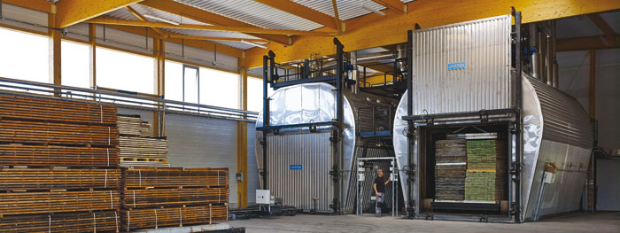

Universite de yaounde 1
Crée par Décret N° 93/036 du 29 janvier 1993, l’Université de Yaoundé I est un Etablissement Public, Scientifique et Culturel doté de la personnalité morale et de l’autonomie financière. Elle est placée sous la tutelle du Ministère chargé de l’Enseignement Supérieur.
L'université de Yaoundé I est un établissement public à caractère scientifique et culturel doté de la personnalité morale et de l’autonomie financière. Elle est située dans la ville de Yaoundé, la capitale politique du Cameroun.
Organisation des études
Dans un souci de comparabilité des enseignements et de respect de la norme LMD (Licence-Master-Doctorat), les enseignements à l’Université de Yaoundé I sont organisés en trois (03) cycles, hormis la Faculté de Médecine et des Sciences Biomédicales :
Le cycle de Licence qui s’étant sur six (06) semestres, donne droit au diplôme de Licence;
Le cycle de Master, quatre (04) semestres, subdivisée en Master I et Master II, donne droit au Diplôme de Master 2;
Le Cycle de Doctorat/PhD, en six (06) semestres lui-aussi, donne droit au diplôme de Doctorat/PhD;
Les facultes de l'UY1
- Faculté des arts, lettres et sciences humaines (FALSH)3
- Faculté des sciences (FS)4
- Faculté de médecine et de sciences biomédicales (FMSB)5
- Faculté des sciences de l'éducation
- ECOLE NORMALE SUPERIEUR DE YAOUNDE
- L’Ecole Nationale Supérieure Polytechnique(ENSP)
- UIT du Bois-Mbamayo 
- E.N.S.E.T. de l'Université de Yaoundé I à Ebolowa
- Cliquer ici pour plus d'information
La Faculté des Arts, Lettres et Sciences Humaines (F.A.L.S.H.) est un établissement public de l’Université de Yaoundé I. Jadis appelée Faculté des Lettres et Sciences Humaines, elle doit son actuelle dénomination de la Réforme universitaire de 1993 avec les décrets 93/027 et 93/036 du 19 janvier 1993 du Président de la République portant respectivement dispositions communes aux universités d’État et organisation administrative et académique de l’Université de Yaoundé I.
La Faculté des Sciences de l’Université de Yaoundé fut créée en juillet 1962 au sein de l’Université Fédérale du Cameroun (décret n°62/DF/289 du 26 juillet 1962). Les premiers enseignements se sont déroulés dans les bâtisses de l’actuel deuxième campus ou Annexe. En octobre 1967, fut inauguré le Campus principal. Elle est devenue la Faculté des Sciences de l’Université de Yaoundé I après la réforme universitaire de 1993 avec les décrets 93/027 et 93/036 du 19 janvier 1993 du Président de la République portant respectivement dispositions communes aux universités d’Etat et organisation administrative et académique de l’Université de Yaoundé I.
La Faculté de Médecine et des Sciences Biomédicales est un établissement de l’Université de Yaoundé 1 qui a pour mission la formation de personnels de santé de haut niveau, adaptés au contexte national et international. Mais son rôle s’étend au-delà de la formation des médecins généralistes. Plusieurs autres professionnels de la santé y sont formés, notamment des médecins spécialistes, des pharmaciens, des chirurgiens dentistes, des techniciens biomédicaux et médicosanitaires.
La Faculté des Sciences de l’Éducation de l’Université de Yaoundé I a été créée sous les auspices de la Réforme universitaire de 1993, avec les décrets 93/027 et 93/036 du 19 janvier 1993 du Président de la République portant respectivement dispositions communes aux universités d’État et organisation administrative et académique de l’Université de Yaoundé I. La Faculté voit finalement son ouverture définitive aboutir en 2013.
L’ENS est un établissement supérieur pour les études centrées sur l’éducation. Elle comporte 14 département d’enseignement. Elle confère des diplômes nationaux (DIPES 1, DIPES 2, DIP. CO et DIPEN). En plus des divers services administratifs, elle abrite une ciré, un restaurant et des équipement de sport. Pour une recherche optimale, le campus est irrigué par le wifi libre d’accès aux étudiants et enseignants.
L’Ecole Nationale Supérieure Polytechnique(ENSP) a été créée le 04 juin 1971 pour former les cadres techniques, et de développer ses recherches pour appuyer le développement du pays. Les spécialités à l’origine étaient Electronique, Electromécanique et Automatique et Génie Civil, en formation courte, et en formation longue, Génie Civil, Electromécanique
Le Recteur de l’Université de Yaoundé I informe le public que le concours d’entrée en première année de la formation initiale à l’Institut Universitaire de technologie du Bois (IUT-Bois) de Mbalmayo, initialement prévu mercredi le 07 septembre 2016 par décision du Ministre de l’Enseignement Supérieur, est reporté au samedi 1er octobre 2016
Departements a UY1
Département de Biochimie
Département de Biologie Animales
Département de Biologie Végétales
Département de Chimie Inorganique
Département de Chimie Organique
Département d’Informatique
Département de Mathématiques
Département de Microbiologie
Département de Physique
Département des Sciences Filieres
Biochimie
Biologie Animales
Biologie Végétales
Chimie Inorganique
Chimie Organique
Informatique
Mathématiques
Microbiologie
Physique
Sciences de terre .svg)